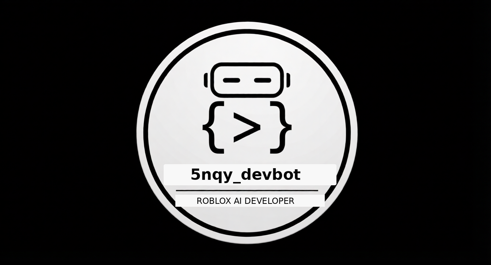

General
Configure how 5nqy_devbot behaves across supported AI chats.
AI providers
Native adapters get site-specific logic. Compatibility adapters are isolated and fail safely when the page changes.
Developer workflow
Keep coding sessions predictable and recoverable.
⚡ Ultra AI
Fan one task out to multiple independent workers, judge their reports, then give the merged blueprint to a final builder.
Auto provider swap
When a provider reports a quota/limit or becomes unavailable, 5nqy_devbot can route the next worker to another enabled provider.
Roblox workflow
Roblox Studio remains the primary MCP target. The existing command protocol and project-memory workflow are preserved. Ultra AI's final builder can inspect and edit real Studio state rather than guessing.
Shortcuts
Browser-level shortcuts are kept minimal so they do not conflict with site shortcuts.
About
A modular browser-based developer assistant for coding and Roblox workflows.

Version . Provider-specific automation remains isolated so one website changing does not bring down the rest of the extension.